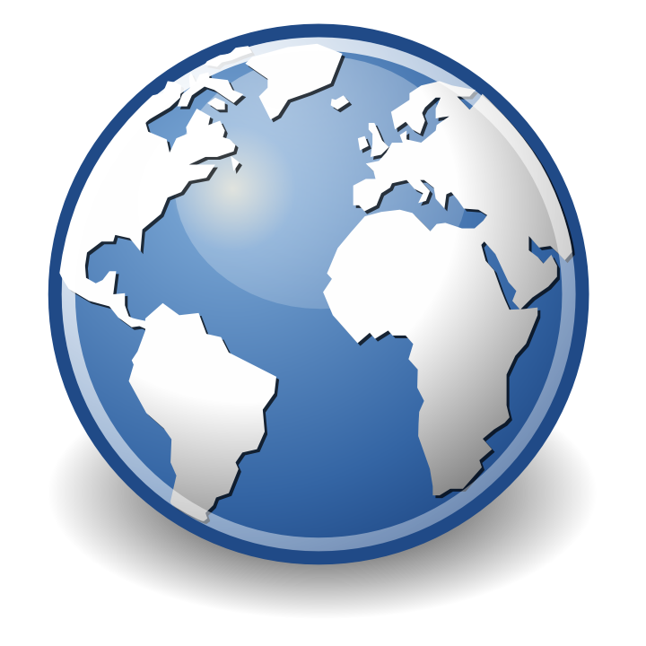
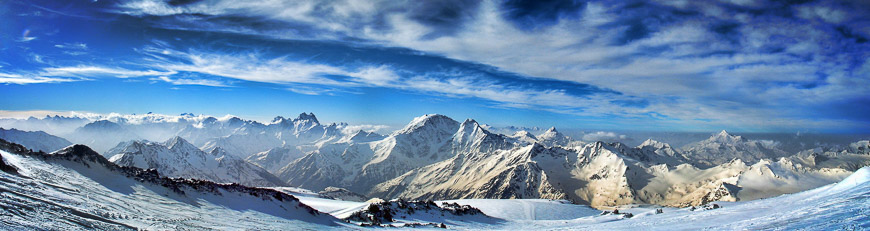
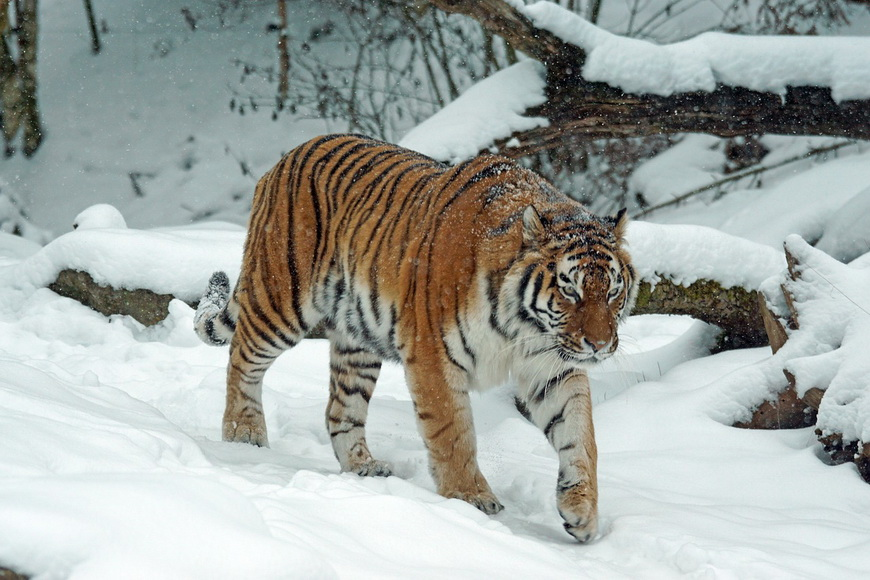

Home
Hotel and Restaurant
Travel
Activity
More Interesting and Random Facts About Russia

- Russia shares a border with 14 countries including Norway, Finland, Estonia, Latvia, Lithuania, Poland, Belarus, China, Ukraine, Georgia, Azerbaijan, Kazakhstan, Mongolia and North Korea. No other country in the world has as many borders.
- There are nine time zones across Russia. Russia is permanently on daylight savings time.
- The lowest point in Russia is the Caspian Sea – at 28 metres below sea level
- The highest point is Mt. Elbrus at 5,633 metres above sea level. It’s the highest mountain in Europe. A chairlift takes you to the 3000 metre mark so if you’re going to climb the mountain that’s where you start.
- Russia has 12 active volcanoes. The Klyuchevskaya Sopka volcano in Kamchatka Territory has had 50 major eruptions in the last 270 years.
- Russia is home to the deepest lake in the world
- Almost half of Russia is covered in forests.
- Life expectancy at birth for males is 64.04 years, and 76.02 years for females.
- Russia has a very high literacy rate – with 99.7% of the population able to read and write by age 15.
- Russian is one of the five most spoken languages in the world.
- Russians use the Cryillic alphabet instead of the Latin alphabet.
- Moscow is home to more billionaires than anywhere else in the world. The latest count is 74.
- Russia is very corrupt. It is is ranked 127 out of 177 on Transparency International’s 2013 Corruption Perception Index.
- In 2011 Russia became the world’s leading oil producer. It is the second largest producer of natural gas. It boasts the second largest coal reserve. This makes the country very susceptible to boom and bust cycles.
- Russia is very close geographically to the United States. The countries separated by the Bering Sea are just 82 kilometres apart.
- There are 1,000 companies licensed to offer communication systems.
- A total of 780 species of birds have been recorded in Russia.
- The birch tree is one of the most common trees in Russia – and the inspiration behind many a poem, song and painting.
- The most famous animal in Russia is the Siberian tiger. They are an endangered species. If you’re lucky enough to see one, it would be in the forests of eastern Russia.
- Russia Day, a national holiday is June 12th.
- Russia’s economy is the eighth largest in the world.

Back to Top